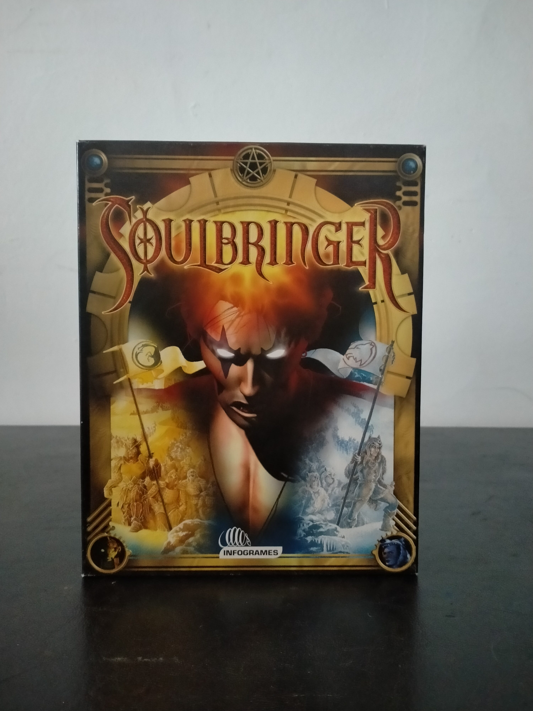

Ficha #000079
Soulbringer
Soulbringer es un juego de rol y aventura de fantasía publicado en el año 2000 para PC. La obra sitúa al jugador en un mundo fantástico marcado por la amenaza de antiguos reyes demoníacos conocidos como Revenants, combinando exploración en tercera persona, progresión de personaje, combate en tiempo real y un sistema mágico basado en combinaciones elementales. Destaca por su estructura narrativa de largo recorrido, su mundo tridimensional, la presencia de múltiples localizaciones y un sistema de combate que permite definir estrategias personalizadas. Esta edición europea distribuida por Infogrames corresponde a la versión física en caja grande para PC CD-ROM, con voces y subtítulos en español, y conserva interés documental como ejemplo de RPG occidental de transición entre finales de los noventa y comienzos de los años 2000.
- Formato
- Big Box
- Plataforma
- Win95 Win98
- Género
- Rol Action RPG Aventura Fantasía Combate en tiempo real
- Serie
- Todos Big Box
- Desarrollador
- Gremlin Interactive
- Distribuidor
- Infogrames
- EAN
- 3546430007075
Contenido de la edición
- Caja Big Box
- Estuche jewel case
- 2 CD-ROM
- Manual
- Hoja informativa de Infogrames
Preservación
- Protección
- No determinado
- Formato recomendado
- BIN/CUE
- Jugable en virtualización
- Sí
Preservación recomendada mediante imagen completa de ambos CD-ROM originales, preferiblemente en formato BIN/CUE para conservar correctamente la estructura del soporte. Conviene documentar también la caja, el manual y la hoja informativa asociada a la edición. La ejecución virtual debería ser viable en entornos Windows 95/98 o mediante configuración de compatibilidad, aunque debe verificarse si la edición concreta realiza comprobación de disco durante instalación o ejecución.